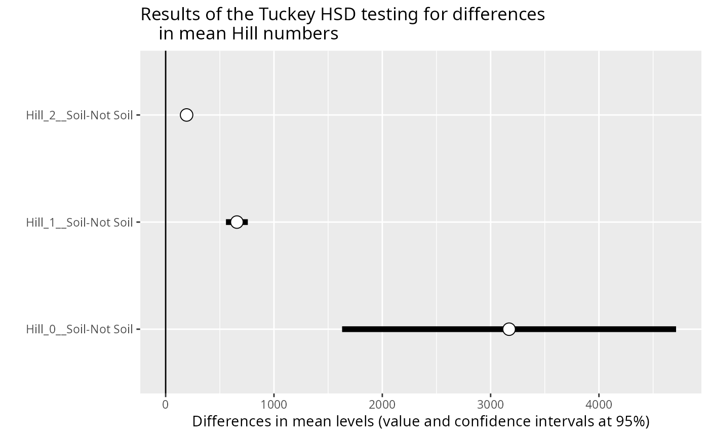
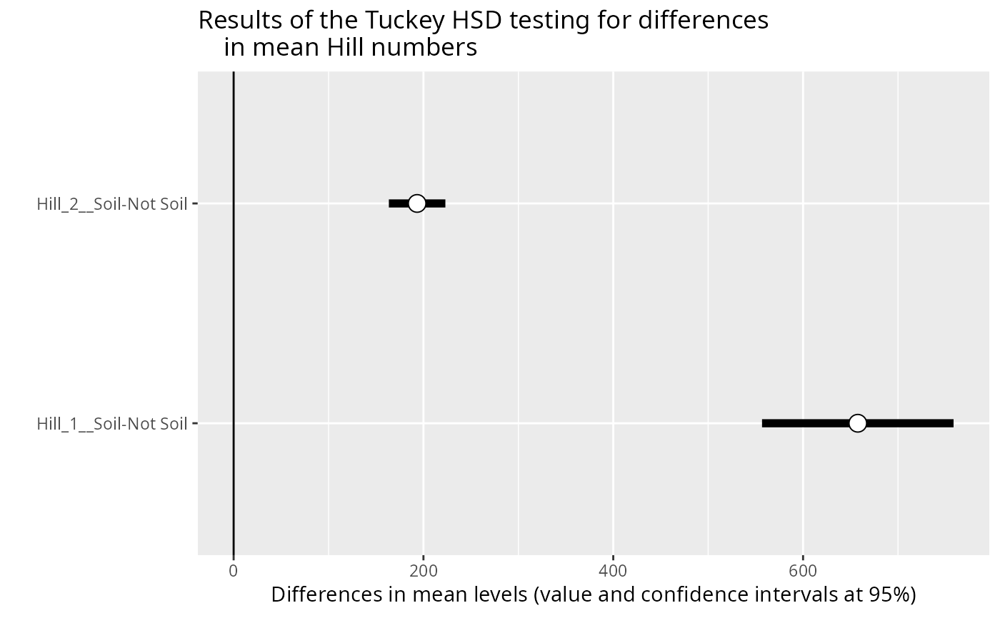

Note that, by default, this function use a sqrt of the read numbers in the linear model in order to correct for uneven sampling depth.
Usage
hill_tuckey_pq(
physeq,
modality,
hill_scales = c(0, 1, 2),
silent = TRUE,
correction_for_sample_size = TRUE
)Arguments
- physeq
(required): a
phyloseq-classobject obtained using thephyloseqpackage.- modality
(required) the variable to test
- hill_scales
(a vector of integer) The list of q values to compute the hill number H^q. If Null, no hill number are computed. Default value compute the Hill number 0 (Species richness), the Hill number 1 (exponential of Shannon Index) and the Hill number 2 (inverse of Simpson Index).
- silent
(logical) If TRUE, no message are printing.
- correction_for_sample_size
(logical, default TRUE) This function use a sqrt of the read numbers in the linear model in order to correct for uneven sampling depth.
Examples
data("GlobalPatterns", package = "phyloseq")
GlobalPatterns@sam_data[, "Soil_logical"] <-
ifelse(GlobalPatterns@sam_data[, "SampleType"] == "Soil", "Soil", "Not Soil")
hill_tuckey_pq(GlobalPatterns, "Soil_logical")
#> Found more than one class "phylo" in cache; using the first, from namespace 'phyloseq'
#> Also defined by ‘RNeXML’ ‘tidytree’
#> Found more than one class "phylo" in cache; using the first, from namespace 'phyloseq'
#> Also defined by ‘RNeXML’ ‘tidytree’

hill_tuckey_pq(GlobalPatterns, "Soil_logical", hill_scales = 1:2)
#> Found more than one class "phylo" in cache; using the first, from namespace 'phyloseq'
#> Also defined by ‘RNeXML’ ‘tidytree’
#> Found more than one class "phylo" in cache; using the first, from namespace 'phyloseq'
#> Also defined by ‘RNeXML’ ‘tidytree’
